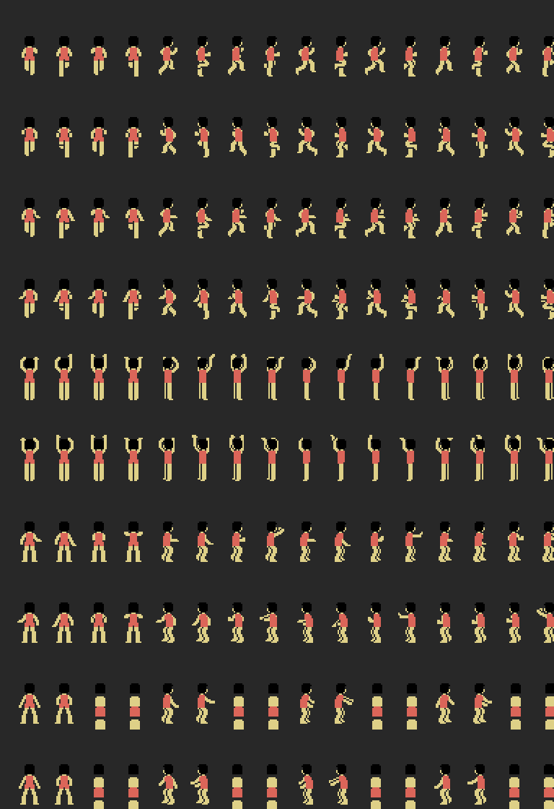

INIT (0x4010) sets the stack at 0xF200, enables the slot in page 2, hooks the frame interrupt to 0x606E and starts: 0x5189 clears the RAM, 0x501F sets SCREEN 2 and loads patterns, sprites and colours, 0x7322 leaves the teams ABC and DEF, and the loop at 0x4044 chains title (0x839C), wait (0x8B28), menu (0x83BA), SET-UP (0x812F) and match. The interrupt handles the players' turning, the falls, the net and the buttons (0x60A0-0x62E3).
Every frame, 0x5C40 works out each player's four sprites: it subtracts the pose offsets (0xA38E) from the position of the feet and adjusts the height with the perspective curves at 0xB59E and 0xB61E (0x5DE4, 0x5DAF). Since the TMS9918 draws no more than four sprites per line, 0x5C0B builds the seven groups (six players and the fixed ones) in an order that changes every frame, 0x5BAB copies them reversed into another buffer and the two go to the two attribute tables (0x1B00, 0x1F00); 0x5B77 flips bit 2 of register 5 to show one or the other. That is what makes the players flicker when they bunch up. On an MSX2 the V9938 draws eight per line: The MSX2 patch takes the game there, measured before and after.

The 56 × 24 map is in RAM (0xC400, decompressed by 0x5F8D). 0x5F33 copies into the name table the 24 rows of 32 bytes starting at the column in 0xE830, with 0x5B07 (SETWRT and outi); 0x5E7C decides when to move it. There is no fine scrolling: the screen jumps one column at a time.
Three routines do it all: 0x5B07 writes BC bytes from HL to DE, 0x5B50 fills BC bytes with A and 0x5AF7 writes one byte at HL. On top of them go 0x7C1B (a zero-terminated string), 0x7C29 (B rows of C characters), 0x7FC1 (a box with patterns 0xF5-0xF7 and 0x62-0x67) and the number printers at 0x7ACF, 0x7ADA and 0x7AA7, which blank the leading zeros by counting in C the digits already written.
0x8AC9 takes the cursor position, the number of options and the ball pattern (0x6F); it reads with CHGET, moves up and down with 0x1E and 0x1F and returns any other key. The chosen option lives in 0xEFCD, whose bit 7 says whether the right-hand team is being dealt with.
With the ball, 0xBB14 takes the player through five states (0xF009): pick a point towards the basket with sine and cosine from the tables at 0xC000, run to it, face the basket, go to the shooting spot and shoot, steal or pass according to chance and the +0x1D and +0x1E skills. Without the ball, 0xBD61 (0xF00A) goes for the ball carrier, marks him or stays put, and 0x76AE measures the shooting zone. The plays at 0xEA89 give each player a script of waypoints to go to.
0x8D42 starts piece A if its priority (0x8F71) is not lower than the one playing; 0x8D8B runs every frame and 0x8DB2 interprets: 0x40-0xFF note (channel in the two high bits, index into the table of 64 periods), 0x20-0x25 mixer, 0x26-0x2F register, 0x33 jump, 0x34/0x35 call and return with its own stack in IX, 0x36/0x37 loop, 0x38-0x3B relative volume, 0x3D silence, 0x00-0x1F wait; a wait of zero ends the piece. Thirteen pieces, ten distinct: the music is piece 1 (and 8, the same pointer) and 4, 5 and 6 are the same one with three priorities.
The Z80's R register (0x50E9, 0x6F53, 0x6F76): one bit or one byte, as needed.
Seventeen pieces of code with no callers, declared in src/dunkshot.entries with their reason: alternative entries (0x59BA, 0x59E8, 0x5AFD), loose routines (0x441D negates HL, 0x6F76 gives 1 or 2 at random, 0x8D3B waits for the sound to end), a five-digit counter (0x7AAE) and 0x8B3C, which writes a zero at 0x785B, which is ROM: a leftover from when the program was tested in RAM.